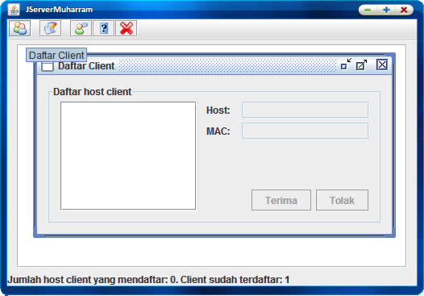
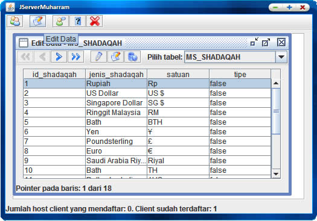
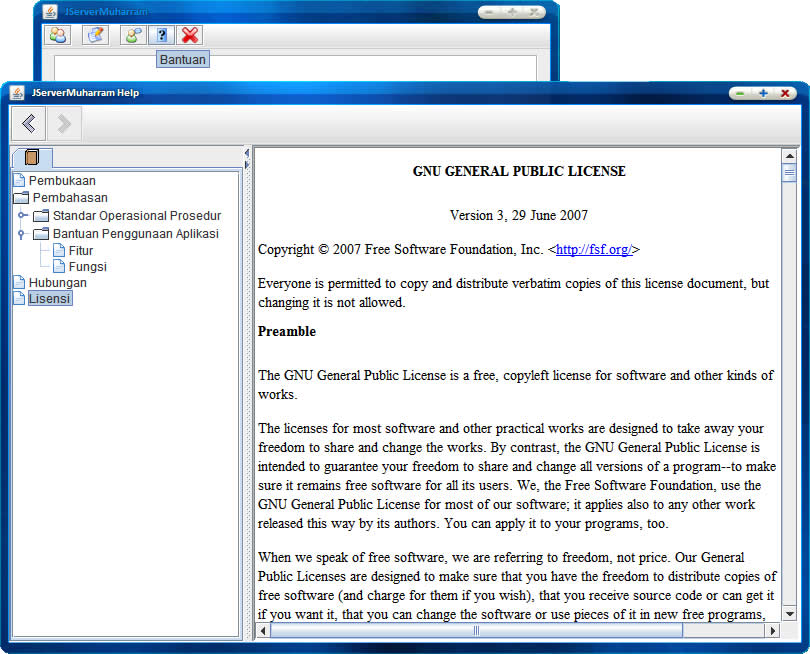

Fitur JServerMuharram
Fitur utama dari aplikasi ini adalah:
Melihat daftar client yang melakukan registrasi

Melakukan pengeditan data

Memberikan fasilitas bantuan

Terima kasih telah menggunakan aplikasi ini